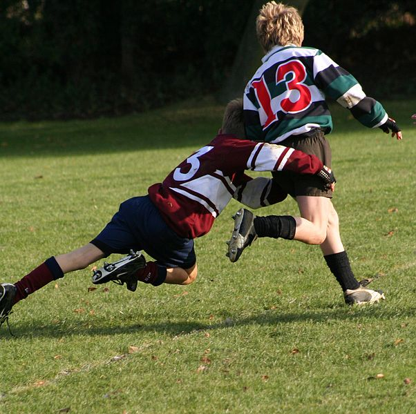
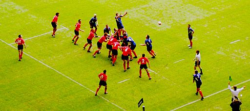

¿Cómo se juega?
La expresión “juego abierto” se refiere a cualquier fase del partido en la que la pelota es pasada o pateada entre compañeros y ambos equipos están disputando la pelota. En el juego abierto, el equipo en posesión trata de hacer que la pelota llegue a jugadores que están en espacios y que pueden avanzar hacia la línea de goal oponente.
Salida de mitad de cancha
Cada mitad del partido comienza con un drop kick efectuado desde el centro de la línea de mitad de cancha. El equipo que recibe debe estar a 10 metros de esa línea.
Pase
Un jugador puede hacer un pase a un compañero de equipo que esté en mejor posición para continuar el ataque, pero el pase debe ir directamente a lo ancho del campo o hacia atrás.Llevando la pelota hacia adelante y pasándola hacia atrás se gana terreno. Si se efectúa un pase forward (hacia adelante), el árbitro detendrá el juego y otorgará un scrum al que arrojará la pelota el equipo que no tenía posesión en el momento del pase. De este modo el pase forward es castigado con la pérdida de posesión de la pelota para ese equipo.
Knock-on
Cuando un jugador pierde control de la pelota, es decir: se le cae o le rebota en la mano o brazo, y la pelota va hacia adelante, se comete un knock-on. Esta infracción se castiga con un scrum con la introducción para la oposición y por lo tanto es una pérdida de posesión.
El tackle
Sólo el portador de la pelota puede ser tackleado por un jugador oponente. Un tackle ocurre cuando el portador de la pelota es agarrado por uno o más oponentes y llevado al suelo, es decir tiene una o ambas rodillas en el suelo,está sentado en el suelo o encima de otro jugador que está en el suelo. Para mantener la continuidad del juego el portador de la pelota debe liberar la pelota inmediatamente después del tackle, el tackleador debe soltar al portador de la pelota y ambos jugadores deben alejarse de la pelota. Esto permite que otros jugadores se acerquen y disputen la pelota empezando de ese modo otra fase del juego.

Foto tomada de Wikimedia Commons
{kind=link}
El ruck
Un ruck se ha formado si la pelota está en el suelo y uno o más jugadores de cada equipo sobre sus pies se agrupan alrededor de ella. Los jugadores no deben jugar la pelota con las manos en el ruck,y deben utilizar sus pies para desplazar la pelota, o empujar más allá de ella de modo que emerja en el último pie del equipo, momento en el cual puede ser tomada con las manos.
Situación de ruck. Video tomado de youtube
El maul
Se ha formado un maul cuando el portador de la pelota es agarrado por uno o más oponentes y al mismo tiempo uno o más compañeros del portador de la pelota se toman a él (por lo tanto un maul necesita un mínimo de tres jugadores). La pelota no debe estar en el suelo. El equipo en posesión de la pelota puede tratar de ganar terreno empujando a sus oponentes para que retrocedan hacia su propia línea de goal.
Situación de maul. Video tomado de youtube.
El scrum
El scrum es un medio de reiniciar el juego después de una detención causada por una infracción menor a las leyes (por ejemplo: un pase forward o un knock-on) o si resulta imposible jugar la pelota en un ruck o maul. La pelota se introduce por el medio del túnel entre las dos primeras líneas, punto en el cual se compite por la pelota, intentando taconearla hacia atrás en dirección de sus compañeros.
Situación de scrum. Video tomado de youtube
El lineout
El lineout es un medio de reinicio del juego después que la pelota haya salido al touch (fuera del campo de juego por uno de los costados).

Gareth Owen tomada de Wikimedia Commons.
{kind=link}